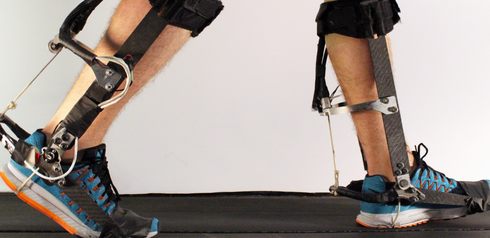
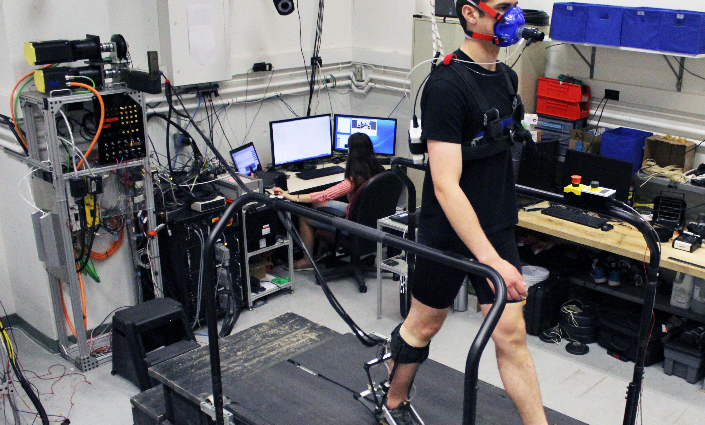
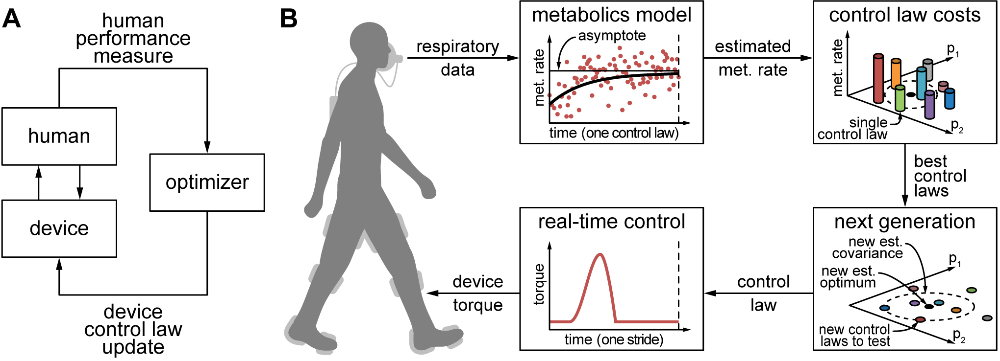

The Experimental Biomechatronics Lab at Carnegie Mellon has chartered research projects focused on human locomotion. In the summer of 2016, I joined a team aiming to utilize torque assistance patterns, generated algorithmically and applied to a subject through exoskeletons, to increase energy efficiency during locomotion, and ultimately augment the way we move.
I supported the principal investigators on the project by identifying areas where the exoskeletons and metabolic mesauring devices could be more comfortable for the subjects. In early-stage testing, there was consistent interference between the exoskeletons during gait; to reconcile this, I designed spacers and guards to add more customization to the devices and eliminate the collisions. I also found creative ways to arrange the metabolic measuring device and harnessing apparatus to eliminate pain points for the subject.

During testing, I responded to subject needs and provided prompting for the various torque conditions being applied. While operating the system from the computer, I was in-tune with subject's feelings, comfort, and fatigue level. I also assisted in authoring the post-test qualitative feedback questionnaire for the experiments, which was used to gather information that helped us refine our testing protocol.

The project was published in the AAAS Robotics journal, viewable here!